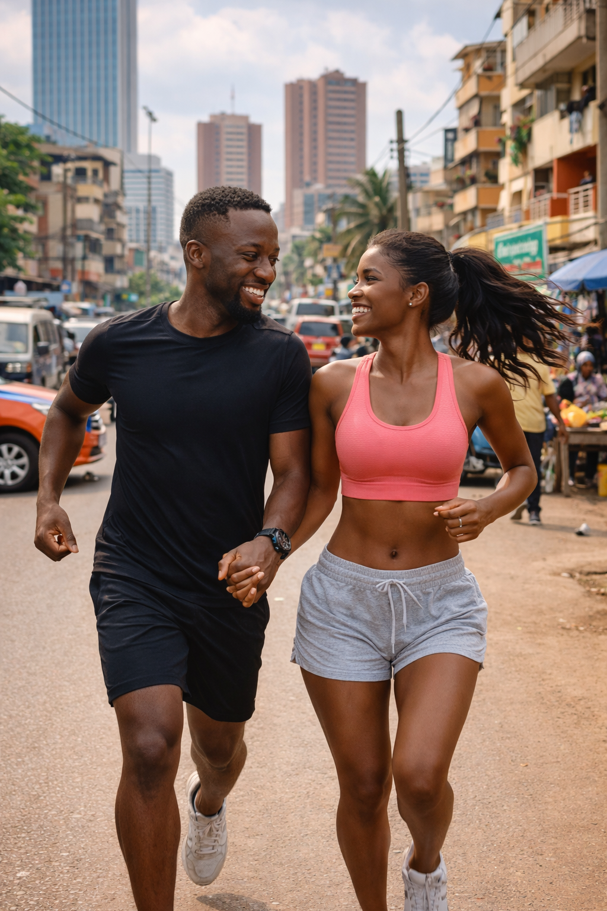
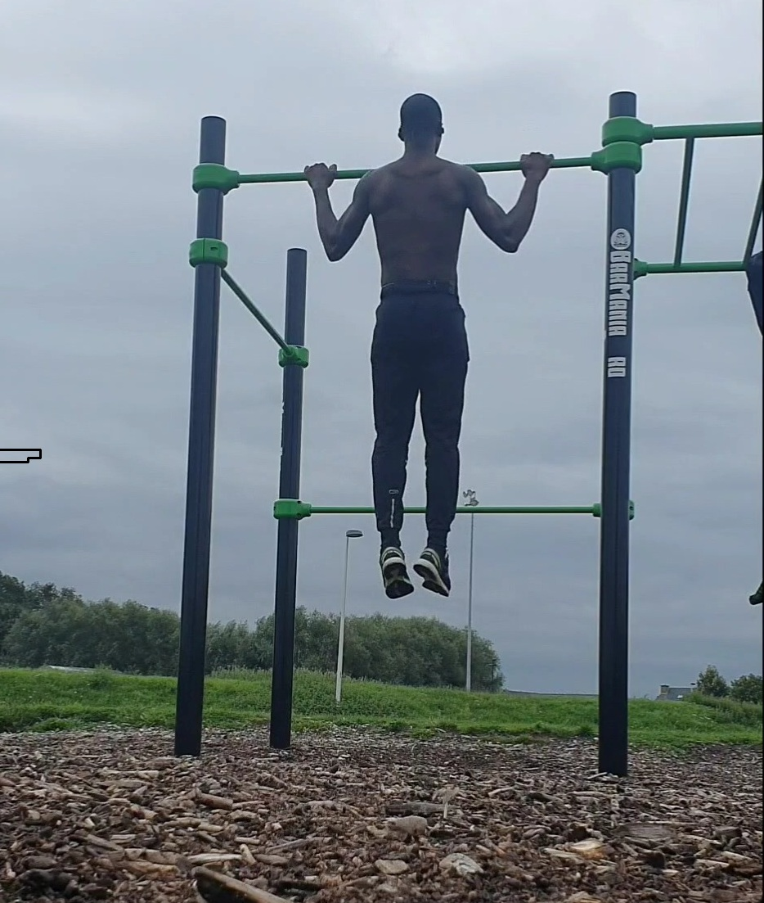

Het is voor niemand nieuwe informatie dat fysieke activiteit belangrijk is voor ons welzijn. Toch kampt 49% van de Belgen met overgewicht of obesitas, en ongeveer 25% van de overlijdens houdt verband met hartziekten. Inderdaad speelt het sport een belangrijke rol in een gezond en evenwichtig leven. Een van de grootste pluspunten van sport is de positieve impact op de fysieke gezondheid. Regelmatig bewegen versterkt het hart, verbetert de bloedsomloop en verhoogt de algemene conditie. Bovendien helpt sport om een gezond gewicht te behouden en vermindert het het risico op verschillende ziektes
Daarnaast heeft sport een sterke invloed op de mentale gezondheid. Tijdens het sporten maakt het lichaam endorfines aan, ook wel bekend als gelukshormonen. Dit vermindert stress en angst en zorgt voor een beter humeur. Sport kan ook helpen om meer zelfvertrouwen op te bouwen, omdat je jezelf uitdaagt en persoonlijke doelen bereikt.
Daarom deel ik met jullie op deze website de belangrijkste oefeningen dat jullie kunnen uitvoeren zonder abonnement in Fitness zaal.
De cultuur van sport begon met lopen en het blijf de basis van lichaamsbewegging.
Een belangrijk voordeel van lopen is dat het je conditie snel verbetert.
Door regelmatig te lopen versterk je je hart en longen,
krijg je meer uithoudingsvermogen en voel je je energieker in het dagelijks leven.
Bovendien helpt lopen om stress te verminderen en je hoofd leeg te maken.

Pull ups zijn voor mij wat boorsten zijn voor een baby's.
Inderdaad zijn Pull-ups één van de meest complete bovenlichaam oefeningen die er bestaan — simpel maar extreem effectief!
De voordelen van Pull-ups zijn onderandere :
Dips zijn een bodyweight oefening waarbij je jezelf omhoog en omlaag duwt aan twee parallelle stangen (of aan een bankje), met alleen je armen als kracht.
Deze oefening is niet voor de beginners maar hij is zeer goed voor iemand die krachtig wil zijn.
De voordelen:
⚠️ Let op: Dips zijn zwaar voor de schouders. Ga niet te diep als je schouderklachten heb